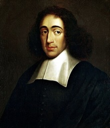

1632-1677 · Reason and Rights
← The philosophy map · About Spinoza
Are you a separate individual, or just one small part of something much bigger?
Warm water in the Pacific Ocean changes the weather thousands of kilometres away. A factory closes in one city, and families on the other side of the world lose their jobs. One post goes viral, and by the evening millions of strangers are talking about the same thing. We often feel separate from everything else, but are we? A lens maker in seventeenth-century Amsterdam thought the answer was clear.
Read one part at a time. After each part, close your eyes and answer the question before you check.
Baruch Spinoza was born in Amsterdam in 1632, into a Portuguese-Jewish family of merchants. He was a brilliant student. He learned Hebrew and later Latin, which let him read the new philosophy of Descartes. But he began to ask questions that worried the leaders of his community. Does God really act like a person? Who wrote the Bible? Nobody knows exactly what he said, but in 1656, when he was only 23, he was expelled from the community.
What happened to Spinoza in 1656?
Spinoza did not fight back, and he did not change his mind. He moved away from Amsterdam and lived simply, in rented rooms in other Dutch towns and finally in The Hague. He earned his living grinding glass lenses for microscopes and telescopes: careful work that left his mind free. He was offered a job as a professor at the University of Heidelberg, but he turned it down. He was worried it would limit his freedom to think and write.
Why did Spinoza turn down the job at Heidelberg?
In his great book, Ethics, Spinoza argued that only one thing really exists: one infinite whole. You can call it God or you can call it Nature; they are the same. Trees, stars, animals and people are all parts of it. Nothing happens by chance; everything is caused by something else within the whole. Spinoza died in 1677, aged 44, and Ethics was published after his death. Centuries later, Albert Einstein said he believed in 'Spinoza's God'.
What did Spinoza mean by 'God or Nature'?
Each word is hidden in a sentence. Read it aloud and say what you think the bold word means. Then reveal and compare.
Which statements sound like Spinoza, and which sound like the opposite view? Decide together, then reveal.
Now you: explain Spinoza's idea of 'God or Nature' to a friend who has never heard of it. Speak for about a minute. Use the starters if they help.
You find a button. If you press it, you will see, for one minute, every effect your life has had on other people and on the world: every small kindness, every mistake, every chain of events, good and bad. You cannot change anything; you can only see it.
Tap two cards. Use the timer to keep going, and use at least two of the phrases above.
No looking back. Answer from memory first, then check.
Why, according to Hobbes, do people agree to be ruled?
What did Machiavelli argue about how rulers should act?
What does Avicenna's flying man show, according to Avicenna?
What did Diogenes believe we need in order to be free?
From memory, out loud. Then check.
1. What was Spinoza's big idea about God and Nature?
2. How did Spinoza earn his living?
3. What did Spinoza lose because of his ideas, and what did he protect?
4. What does 'interconnected' mean? Give an example.